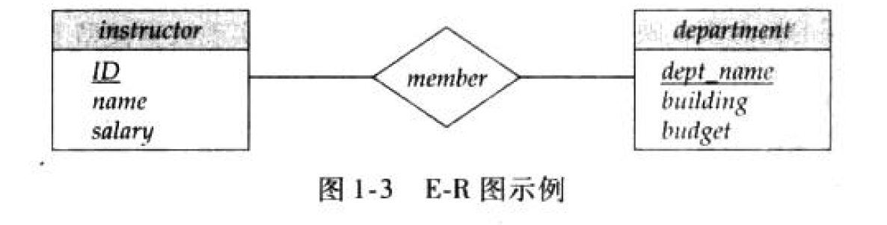

数据库系统概念——引言
引言
什么是数据库
数据库管理系统(DBMS)：一个互相关联的数据集合和一组用于访问这些数据的程序组成。
数据库(DB)：其中的数据集合称为数据库
为什么不使用传统的文件处理系统？
- 数据的冗余和不一致(data redundancy and inconsistency)
- 数据访问困难(difficulty in accessing data)：手工提取列表很麻烦
- 数据孤立(data isolation)：数据分散在不同文件中，检索困难
- 完整性问题(integrity problem)：一些值要满足一致性约束
- 原子性问题(atomicity problem)：如转账操作，要么全部发生，要么不发生
- 并发访问异常(concurrent-access anomaly)：并发的更新操作可能导致数据不一致
- 安全性问题(security problem)：类似于用户权限
三层抽象
DBMS的一个主要任务是要提供给用户数据的抽象视图（隐藏关于数据存储与维护的某些细节）
三层抽象：物理层——>逻辑层——>视图层
- 物理层：描述数据是怎样存储的
- 逻辑层：描述数据库中存储了什么数据，它们之间有什么关系
- 视图层：只描述了用户关心的某个部分
为什么要划分出这样的层次模型？
物理数据独立性：应用程序不依赖于物理模式，即使物理模式改变了它们无需重写。即修改物理层，应用程序不受影响。
实例(instance)：特定时刻存储在数据库中的信息的集合
模式(schema)：数据库的总体设计
根据上述抽象模型可以划分为几个模式：
- 物理模式
- 逻辑模式
- 子模式
数据模型：一个描述数据、数据联系、数据语义以及一致性约束的概念工具的集合。可简单划分成4类模型
- 关系模型
- 实体-联系模型(E-R模型)
- 基于对象的数据模型
- 半结构化数据模型：常用可扩展标记语言XML
- 网状数据模型和层次数据模型：（弃用）
数据库语言
两种语言构成SQL的不同部分：
- 数据定义语言(DDL)：定义数据库模式
- 域约束(domain constraint)
- 参照完整性(referential integrity)
- 断言(assertion)
- 授权(authorization)
- 数据操纵语言(DML)：表达数据库的查询和更新
- 过程化DML：指定需要什么数据，且如何获得这些数据
- 声明式DML：只指定需要什么数据，不指明如何获取
数据字典：DDL的输出放在数据字典中，数据字典包含元数据。可以看作一种特殊的表，只能由数据库系统本身来访问和修改。
元数据：关于数据的数据
实体-联系模型
实体：现实世界中可区别于其他对象的一个物体
属性：实体通过属性的集合来描述
联系：几个实体之间的联系
实体集：同一类型的所有实体的集合
映射基数：某个联系集能与一实体进行关联的实体数目
实体-联系图(entity-relationship diagram E-R图)：

存储管理
存储管理器：数据库系统中负责在数据库中存储的底层数据与应用程序以及向系统提交的查询之间提供接口的部件。
存储管理部件包括：
- 权限及完整性管理器
- 事务管理器
- 文件管理器
- 缓冲区管理器
存储管理器实现了几种数据结构：
- 数据文件
- 数据字典
- 索引
查询处理
- DDL解释器：解释DDL语句，并将定义记录在数据字典中
- DML编译器：将查询语言中的DML语句翻译为一个执行方案。还进行查询优化，选出代价最小的方案
- 查询执行引擎：执行DML编译器产生的低级指令
事务管理
事务：是数据库应用中完成单一逻辑功能的操作集合。是具有原子性和一致性的单元。
恢复管理器：检测系统故障并将数据库恢复到故障发生以前
并发控制管理器：控制并发事务间的相互影响，保证数据库一致性
事务管理器：包括并发控制管理器和恢复管理器
体系结构
数据库系统概念——引言
https://wuhlan3.github.io/2021/09/04/数据库系统概念1/